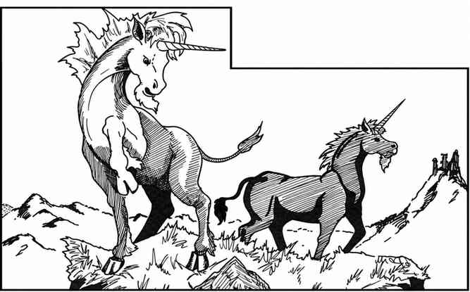
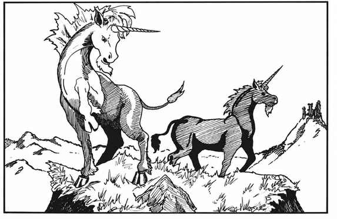

独角兽 · Unicorn

 |
|
独角兽只栖息在远离人类聚居地的温带林地。这些强大而善良的生物避开所有生物，唯独可能接近精灵妖、树精等。纯洁且善良的精灵或人类少女有 25% 概率驯服独角兽作为坐骑；独角兽会成为忠诚服从的坐骑。它们在开阔林间空地筑巢，财宝藏在附近的空心树或岩隙中。
独角兽冲锋时不使用两只前蹄，而以角攻击并造成双倍伤害（2–24）。其魔法角在命中检定上获得 +2；拥有独角兽角可彻底治疗一切毒素，包括毒气。独角兽自身免疫毒素，总能在 24 寸外察觉敌人接近，行动非常安静，并以 1–5 突袭。每天一次，它们能使用有限距离的传送术（类似次元门），最多移动 36 寸，也能带着骑手传送。
独角兽进行豁免时视为 11 级魔法师；不能被魔法魅惑或定身，死亡法术对其无效。它们会说自己的语言。